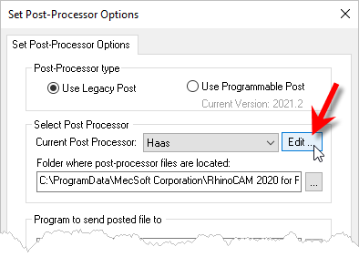
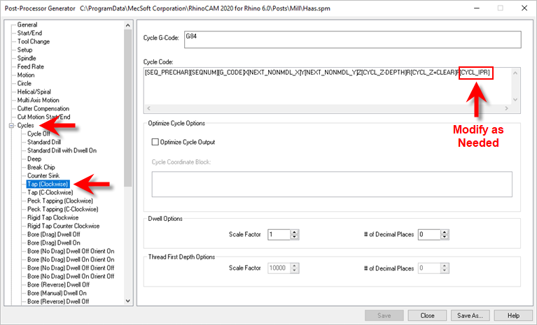

|
<< Click to Display Table of Contents >> Navigation: RhinoCAM FAQs > Post-Processing > How to: Output Feedrate for Tap Cycles |
For tap operations, the feedrate can be computed in different ways. This depends on what is expected by the controller.
•Spindle Speed x Thread Pitch
•Thread Pitch
•1/ Thread Pitch
•Cut Feedrate
The post needs to be setup with the appropriate variable to output the feedrate.
Thread Pitch is defined under the Tool definition and Spindle Speed is set under Feeds/Speed tab of the Tap operation.
Use one of the following macro’s in the post processor to output the feedrate. (Edit the post processor, click cycles tab & select Tap)
[CYCL_IPR] - Spindle Speed x Thread Pitch
[CYCL_TPI] – Thread Pitch
[CYCL_1/TPI] – 1/ Thread Pitch
[CUT_FEED] – Cut Feedrate
Please use the screen shot below for a visual description of where to make the changes.

